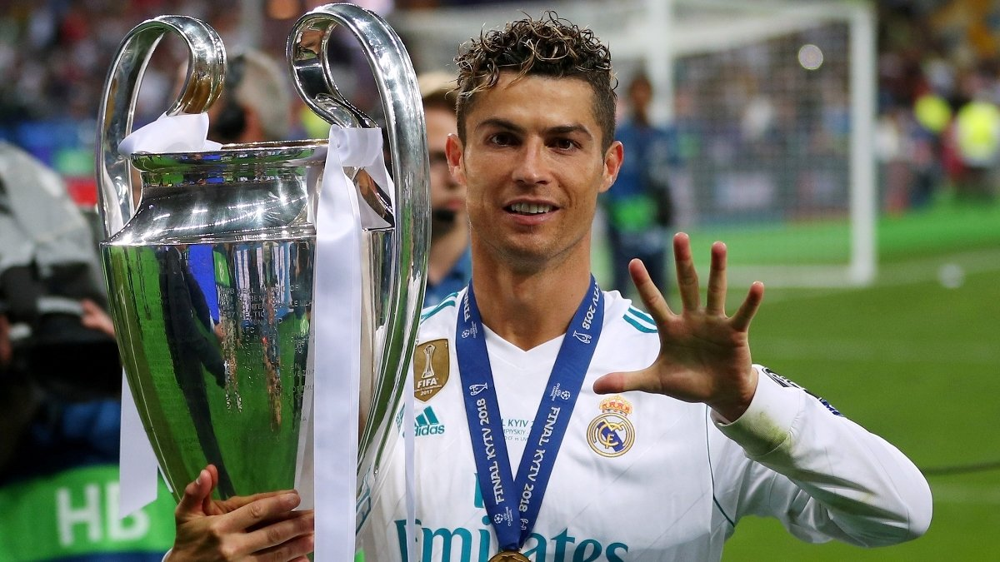

Криштиану Роналду Считается одним из лучших футболистов всех времён.Рекордсмен по количеству матчей, сыгранных за национальную сборную, лучший бомбардир в истории футбола по данным МФФИИС и четвёртый по данным RSSSF[англ.], самый результативный футболист на уровне сборных[13]. Признан Португальской футбольной федерацией лучшим игроком в истории португальского футбола[14]. Первый футболист в истории, которому удалось выиграть английскую Премьер-лигу, испанскую Примеру и итальянскую Серию A[15]. Признавался лучшим игроком и бомбардиром сезона в каждом из этих турниров. Начал профессиональную карьеру в португальском клубе «Спортинг», в 2003 году перешёл в английский «Манчестер Юнайтед», в 2009 году — в испанский «Реал Мадрид» (сумма этого трансфера до 2013 года была рекордной за всю историю футбола), в 2018 году — в итальянский «Ювентус». Неоднократно становился обладателем «Золотого мяча» France Football (2008, 2016, 2017), «Золотого мяча» ФИФА (2013, 2014) и «Золотой бутсы» (2008, 2011, 2014, 2015). Является рекордсменом по количеству проведённых матчей в еврокубках, лучшим бомбардиром европейских турниров за всё время, лучшим ассистентом в истории Лиги чемпионов УЕФА[16] и рекордные семь раз становился лучшим бомбардиром сезона в Лиге чемпионов УЕФА, шесть из которых — подряд: в 2008, а также в 2013, 2014, 2015[b], 2016, 2017 и 2018 годах. После третьей подряд победы в Лиге чемпионов в составе «Реал Мадрида» стал первым игроком, выигравшим этот трофей пять раз[17]. За национальную сборную Португалии провёл 213 матчей, сыграл на 14 турнирах и отличился на 13 из них. С 2008 года является капитаном сборной, в 2014 году стал её лучшим бомбардиром, а в 2016 году установил рекорд по количеству сыгранных матчей. В составе сборной стал чемпионом Европы 2016 и победителем Лиги наций УЕФА 2019. Первый европеец, который смог забить 100 или больше мячей в составе сборной. Один из самых узнаваемых спортсменов в мире, признан самым высокооплачиваемым спортсменом мира по версии журнала Forbes в 2016 и 2017 годах[18][19], а также самым известным спортсменом мира по версии ESPN в 2016, 2017, 2018 и 2019 годах. Time включил Роналду в список ста самых влиятельных людей в мире в 2014 году. C 2010 по 2019, заработав, по оценкам журнала Forbes, 800 млн долларов, занял второе место в списке самых высокооплачиваемых спортсменов десятилетия, уступив лишь Флойду Мейвезеру[20]. В ноябре 2022 года стал первым в истории человеком, набравшим 500 миллионов подписчиков в Instagram
Полное имя Криштиану Роналду душ Сантуш Авейру Прозвище CR7 Родился 5 февраля 1985 (40 лет) Фуншал, Португалия Гражданство Португалия Рост 185—189 см Позиция крайний полузащитник нападающий Информация о клубе Клуб Флаг Саудовской Аравии Ан-Наср Номер 7 Молодёжные клубы 1993—1995 Флаг Португалии Андоринья 1995—1997 Флаг Португалии Насьонал 1997—2002 Флаг Португалии Спортинг (Лиссабон) Клубная карьера[* 1] 2002—2003 Флаг Португалии Спортинг (Лиссабон) 25 2002 → Флаг Португалии Спортинг B 2 (0) 2003—2009 Флаг Англии Манчестер Юнайтед 196 2009—2018 Флаг Испании Реал Мадрид 292 2018—2021 Флаг Италии Ювентус 98 (81) 2021—2022 Флаг Англии Манчестер Юнайтед 40 2023—н. в. Флаг Саудовской Аравии Ан-Наср 74 Национальная сборная[* 2] 2001 Флаг Португалии Португалия (до 15) 9 2001—2002 Флаг Португалии Португалия (до 17) 7 2002—2003 Флаг Португалии Португалия (до 21) 10 2003 Флаг Португалии Португалия (до 20) 5 2003—н. в. Флаг Португалии Португалия 219 2004 Флаг Португалии Португалия (олимп.) 3 Международные медали Кубки конфедераций Бронза Россия 2017 Чемпионаты Европы Серебро Португалия 2004 Бронза Польша/Украина 2012 Золото Франция 2016 Лиги наций УЕФА Золото Португалия 2019 Государственные награды и звания Великий офицер Ордена Инфанта дона Энрике Офицер ордена Инфанта дона Энрике Командор португальского ордена Заслуг Количество игр и голов за профессиональный клуб считается только для различных лиг национальных чемпионатов, обновлено по состоянию на 18 апреля 2025 года. Количество игр и голов за национальную сборную в официальных матчах, обновлено по состоянию на 23 марта 2025 года.
5-кратный обладатель "Золотого мяча" Чемпион Европы (2016) с Португалией Лучший бомбардир в истории Лиги чемпионов Более 800 голов за карьеру